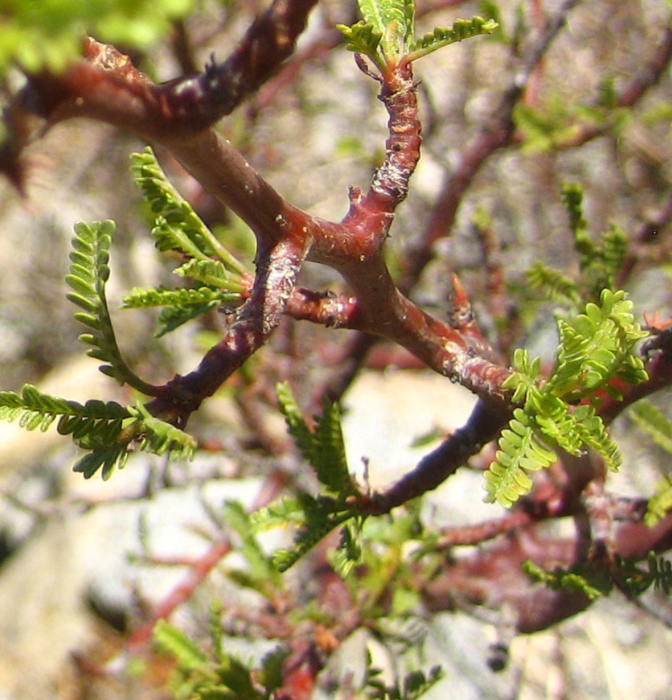
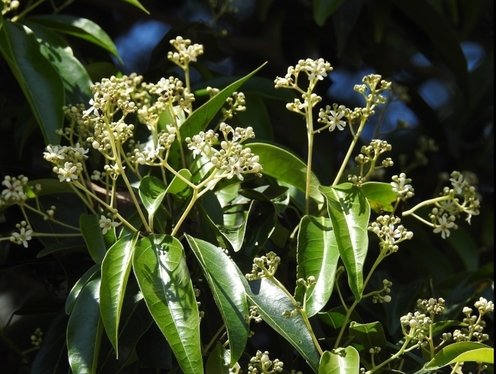
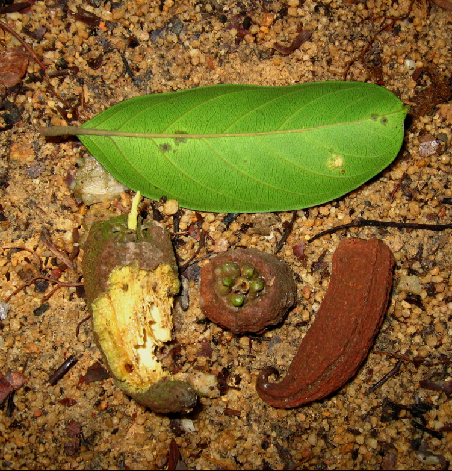
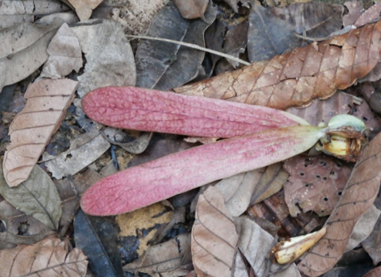
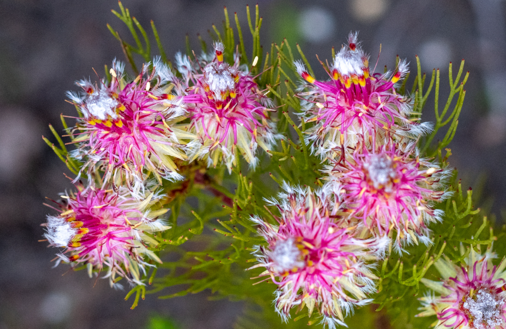
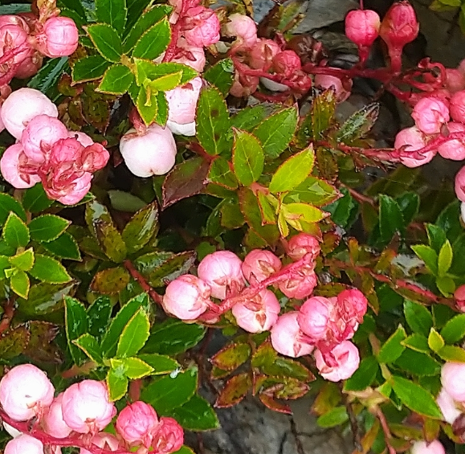

Families

- Burseraceae
- The Burseraceae are also known as the torchwood family, the frankincense and myrrh family, or simply the incense tree family.

- Lauraceae
- Lauraceae, or the laurels, is a plant family that includes the true laurel and its closest relatives.
Genera

- Vatica
- Vatica is a genus of plants in the family Dipterocarpaceae. Its species range from India and southern China through Sri Lanka, Indochina, Indonesia, the Philippines, and New Guinea.

- Dipterocarpus
- Dipterocarpus is a genus of flowering plants and the type genus of family Dipterocarpaceae.
Species

- Acrocarpae
- Acrocarpae is a section of plants with 1304 observations.

- Shrubs
- Shrubs prostrate or erect, 10 to 30 cm tall, much branched.